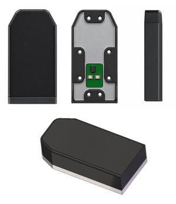

← 전체 연구 보기그리퍼용 3축
그리퍼 촉각 센서의 앞면, 뒷면, 측면과 조립 CAD 형상.
02 / TACTILE SENSOR FOR GRIPPERS
그리퍼용 3축
촉각 센서
그리퍼에 장착 가능한 3축 촉각 센서 연구.

그룹 / 섹터
23 / 69
그룹마다 3개의 전극
적용 면적
25 × 50 mm
그리퍼 손가락의 접촉면
다채널 취득 회로
6 CDCs
CAN FD · 100 Hz 출력
그리퍼 접촉 실험 영상
그리퍼의 두 촉각 패드를 번갈아 누르며 힘과 접촉 위치 확인. 왼쪽은 실제 접촉 동작, 오른쪽은 각 패드의 위치·힘 벡터와 3축 출력 기록.
전극 배열과 다채널 회로
세 섹터 전극 원리를 유지하며 그룹 수를 4개에서 23개로 확장. 접촉 하중에 따른 전도성 실리콘·유전체 변형으로 섹터별 정전용량 변화 측정.
4층 PCB에 센싱 전극과 여섯 개의 정전용량 변환기를 배치. 센싱 배선은 여섯 개의 active-shield 영역으로 구성.
- 센싱 배열
- 23 groups / 69 sectors
- PCB / 취득 회로
- 4 layers / 6 CDCs
- 전원
- 5 V
- 통신 / 출력률
- CAN FD / 100 Hz
- 보고된 수직력 범위
- 0–40 N
- 보고된 전단력 범위
- ±15 N
센서 제작과 조립
전도성 접촉부와 유전체를 성형한 뒤 전극 그룹에 맞춰 정렬·접착·고정. 층 두께와 조립 조건의 영향을 반영하기 위해 조립 후 캘리브레이션 수행.
기준 센서와 3축 출력 비교
AFT150 힘·토크 센서를 기준으로 수직력과 두 방향의 전단력 반복 인가. 기준 신호는 IXXAT Classical CAN, 촉각 센서 신호는 PCAN CAN FD로 취득한 뒤 시간·좌표계를 맞춰 비교.
손끝 센서와 같은 기준 하중 절차를 사용하되, 그리퍼의 채널 배치와 조립 상태에 맞춰 계수 산출. 아래 기록의 압축력은 음의 Fz로 표기.
자료와 해석자료: 그리퍼 센서 설계·제작 기록, 기준 센서 비교 실험과 장착 영상.